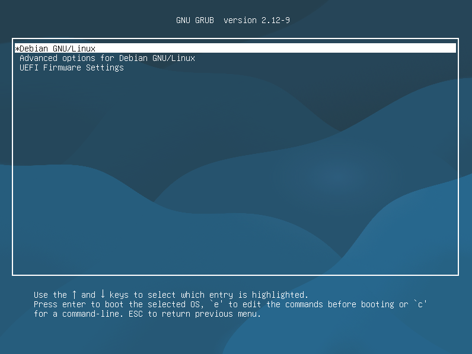
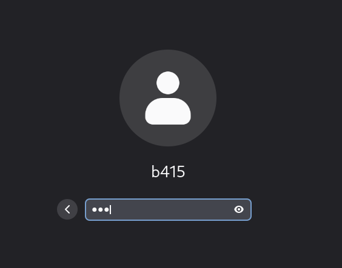
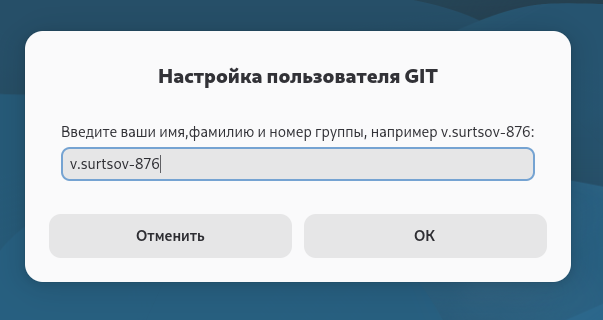
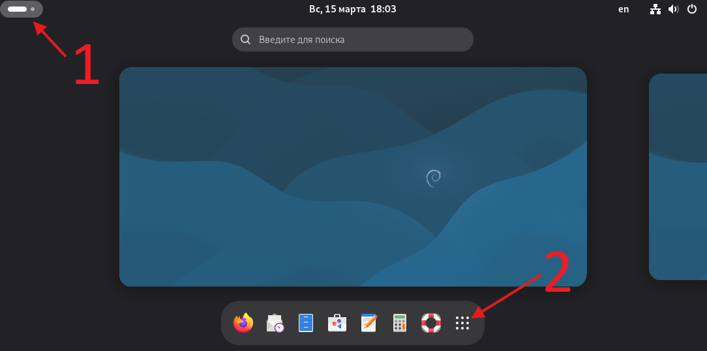
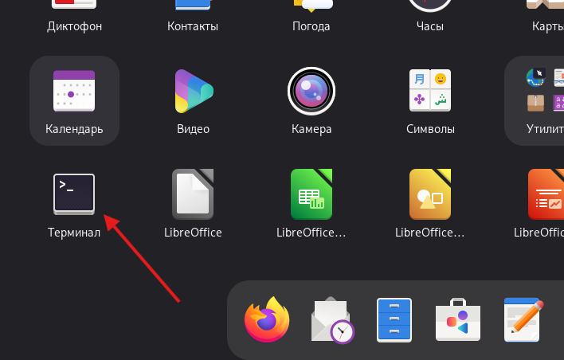
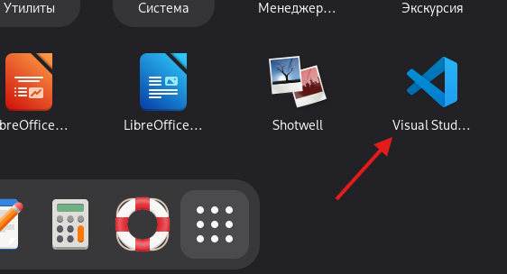
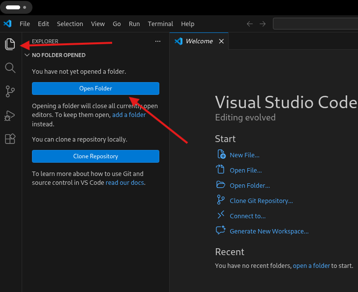

Сурцов Владимир Владимирович
Операционные системы семейства Linux можно устанавливать "рядом" с ОС Windows. При этом загрузчик Grub определяет наличие установленной системы Windows в момент настройки и позволяет осуществлять запуск обе операционные системы с одного носителя (жесткого диска) без необходимости выбирать источник в BIOS/UEFI. В ходе выполнения работ мы будем использовать операционную систему Debian.
Так как настроен автоматический запуск ОС Windows, поэтому после включения и появления окна загрузчика Grub у вас есть 5 секунд на отмену автоматичееской загрузки. Для этого необходимо выбрать пункт Debian "GNU/Linux" и подтвердить выбор нажатием клавиши "Enter".

Вход в систему осуществляем как пользователь b415 с паролем "123"

Для корректного отображения автора фиксации в СКВ необходимо задать пользователя git. Для удобства сделано окно для ввода имени пользователя.

Для получения списка графических приложений необходимо перейти к выбору рабочих столов нажать клавишу SUPER (Wondows) или кноку в верхнем левом углу (цифра 1) и перейти в список приложений (цифра 2)

Для открытия терминала необходимо в списке приложений выбрать Терминал (Terminal).

Терминал в Linux (командная строка, CLI) — это программа, с помощью которой пользователь взаимодействует с операционной системой через интерфейс командной строки. Терминал обеспечивает прямой доступ к базовой системе и может использоваться для решения широкого спектра задач: выполнять команды, перемещаться по файлам, устанавливать пакеты программного обеспечения, автоматизировать повторяющиеся задачи (создавать скрипты и запускать их из командной строки) и другие.
Абсолютные пути указывают полное местоположение файла (в том числе директории, так как директория в Linux - тоже файл) от корневой директории (/). Всегда начинаются с прямого слеша (/). Показывают точное расположение файла в системе и не зависят от того, где находится пользователь. Система начинает поиск с корня, каждая директория в пути указывается шаг за шагом, поиск продолжается, пока не будет достигнут целевой файл.
cat /home/b415/.gitconfigОтносительные пути указывают расположение файла относительно текущего положения. Могут адаптироваться к изменениям в текущем рабочем каталоге, что делает их удобными для написания сценариев, разработки и управления файлами в пределах ограниченной области. Чтобы узнать текущего положение необходимо выполнить команду "pwd".
cd /home/b415/ && cat .gitconfig/ # корень или root, начала всего. # текущая директория.. # родительская директория/home/username # домашняя директория пользователя/root # домашняя директория суперпользователя root/usr # файлы только для чтения (неизменяемые)/bin /usr/bin # базовые команды доступные всем /sbin /usr/sbin # базовые команды доступные суперпользователю/boot # файлы необходимы для загрузки системы/dev # файлы устройств/etc # файлы конфигурации/lib # разделяемые библиотеки/var # файлы которые в процессе выполнения программ изменяются/var/log # хранение логов/opt # стороннее ПО не входящее в состав дистрибутива/proc # виртуальная ФС предоставляющая доступ к внутренним структурам ядра/tmp # временные файлы, которые удаляются при перезагрузкеcd directory # перейти в директориюpwd # текущая директорияwhoami # текущий пользовательtouch file # создать пустой файлrm file # удалить файл (с ключами можно и директории)mv old new # переместить и/или переименоватьls directory # содержимое директорииcat file # прочитать содержимое файлаgrep pattern file # текстовый поискfind # поиск файловecho text # вывести текст в stdoutreboot # перезагрузить узелshutdown # выключить узелless file # прочитать содержимое файла с возможностью листатьhead file # посмотреть начало файлаtail file # посмотреть конец файлаsort file # сортировка строкnano file # простой текстовый редакторvim file # пролвинутый редактор для выхода нажать ESC, потом : и наконец q :)mc # псевдографический файловый менеджерpwd > file # перенапрвляет stdout в файл с перезаписьюwhoami >> file # перенапрвляет stdout в файл без перезаписи (дописывает)sort < names.txt # перенаправление содержимого файла в StdIn командыcommand > cat 2>&1 # перенаправить StdErr в StdOutfind . | sort # перенаправление StdOut предыдущей команды в StdIn следующей командыtrue; echo $? # обращение к переменной, которая хранит код выхода предыдущей командыtrue && echo "ok" # выполнить команду если предыдущая завершилась с кодом выхода равным 0false || echo "error" # выполнить команду если предыдущая завершилась с ошибкойFOO="foo" # присвоение переменной значенияBAR=$(pwd) # присвоить переменной значение из StdOut командыecho $FOO ; echo ${FOO}bar # использование переменнойif [[ $FOO == $BAR ]]; then # сравнение переменых
echo "true" # если истина
else
echo "false" # если лож
fi Visual Studio Code (VS Code) — текстовый редактор, разработанный Microsoft для Windows, Linux и macOS. Позиционируется как «лёгкий» редактор кода для кроссплатформенной разработки веб- и облачных приложений.
Для открытия терминала необходимо в списке приложений выбрать Visual Studio Code.

Необходимо перейти в встроенный "Проводник" ("Explorer") и нажать открыть "Open Folder".

После открытия директории в встроенном проводнике будет будет указано дерево файлов.